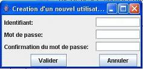

Ajouter un utilisateur
Pré-requis : Être un administrateur de XAGDOP
Cliquer sur le bouton « ADMIN »
Cliquer sur le bouton « Créer un utilisateur ».
Indiquer le login et le mot de passe du nouvel utilisateur.

Cliquer sur « Valider »